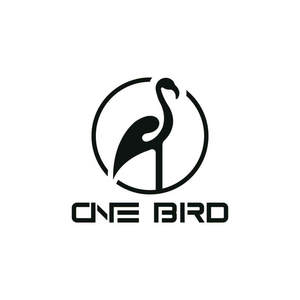

Trade Mark Journal No.2025/011 14 March 2025
UK00004166835 28 February 2025 (28)

- Class 28
- Christmas trees of synthetic material; Christmas trees of synthetic materials; Christmas tree [synthetic]; Artificial Christmas trees; Christmas trees (Artificial -); Electronic board games; Electronic games; Board games; Electronic dart games; Compendiums of board games; Wooden toys; Toys; Plastic toys; Toy furniture; Wooden toy building blocks; Christmas tree decorations and ornaments; Decorations and ornaments for Christmas trees; Christmas tree decorations; Christmas tree ornaments; Decorations for Christmas trees; Stuffed and plush toys; Stuffed plush toys; Plush stuffed toys; Plush toys; Stuffed toys; Talking toys; Talking dolls; Bouncing toys; Novelty toys for playing jokes; Wind-up walking toys; Punching toys; Chewing toys for parrots; Toys, games, and playthings; Transforming robotic toy vehicles; Transforming robotic toys; Toy vehicles with transforming parts; Remote-controlled toy vehicles; Toy vehicles; Radio-controlled toy vehicles; Vehicles (Radio-controlled toy -); Stuffed toy bears; Stuffed toy animals; Stuffed bean-filled toys; Stuffed animals [toys]; Stuffed dolls; Teddy bears; Clothing for teddy bears; Stuffed puppets; Toy animals; Soft sculpture plush toys; Soft sculpture toys; Soft toys; Smart plush toys; Plush dolls; Soft toys in the form of animals; Cuddly toys; Soft toys in the form of elks; Plush toys with attached comfort blanket; Fluffy toys; Manipulative logic puzzles; Manipulative puzzles; Manipulative logic games; Puzzles; Manipulative games; Jigsaw puzzles; Cube puzzles; Puzzles [toys]; Musical Christmas tree ornaments; Ornaments for Christmas trees; Non-edible christmas tree ornaments; Tinsel for decorating Christmas trees; Christmas tree decorations [other than edible or for illumination]; Toy Christmas trees; Ornaments for Christmas trees, except lights, candles and confectionery; Christmas tree skirts; Bells for Christmas trees; Festive decorations, party novelties and artificial Christmas trees; Ornaments for Christmas trees, except illumination articles and confectionery; Christmas trees (Ornaments for -), except illumination articles and confectionery; Christmas tree stands; Toys for animals; Toys and playthings for pets; Toys and playthings for pet animals; Squeezable squeaking toys; Toy dolls; Toys, games and playthings for pet animals; Wind-up toys; Electronic learning toys; Electronic toys; Electronic activity toys; Electronic action toys; Electronic educational teaching games; Electronic games for the teaching of children; Electronic educational game machines for children; Educational toys; Conveyances for teddy bears; Mascot dolls; Toy flowers; Matryoshka dolls [wooden nested Russian dolls]; Toy balloons; Matryoshka dolls; Toy foam hands; Mosaic puzzles; Puzzle mats [toys]; Toys in the form of puzzles; Cube-type puzzles; Chess pieces; Interlocking toy construction pieces; Wooden pieces for shogi game (koma); Checkers pieces; Chess games; Chinese chess as games; Korean chess pieces (Jang-gi pieces); Drones [toys]; Remote-controlled submarines being toys; Radio-controlled toys; Toy robots; Radio-controlled toy robots; Remote-controlled toy planes; Controllers for toys; Toy airplanes; Radio-controlled toy helicopters; Toys for pet animals; Toy dogs; Toy birds; Motor driven toy animals; Pet toys; Toy figurines; Toy plants; Animal replicas as playthings; Smart toys; Smart robot toys; Intelligent toys; Smart electronic toy vehicles; Bendable toys; Ride-on toys; Inflatable toys; Electronic remote controlled toy vehicles; Four-wheeled toy vehicles; Ride-on toy vehicles; Toy automobiles; Electronically operated toy motor vehicles; Electronically operated toy vehicles; Toy cars; Ride-on toy vehicles (Motorised -); Toy model vehicles; Modular toys; Mechanical toys; Model cars [toys or playthings]; Miniature car models [toys or playthings]; Battery-operated action toys; Toy watches.
Beijing Benniao Trading Co., Ltd.
Representative: DY CNUK Ltd